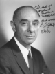
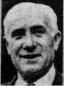

Robert F. Wagner Jr.
Party: Democrat
Bio: Incumbent mayor emphasizing his record of urban renewal, expanded housing and schools, and continued modernization of city government.
Party: Democrat
Bio: Incumbent mayor emphasizing his record of urban renewal, expanded housing and schools, and continued modernization of city government.

Party: Republican
Bio: Running as a moderate to liberal Republican emphasizing government reform and anti-corruption.

Party: Citizens
Bio: Running as a fiscal conservative criticizing high taxes and high city spending.